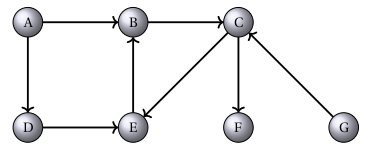
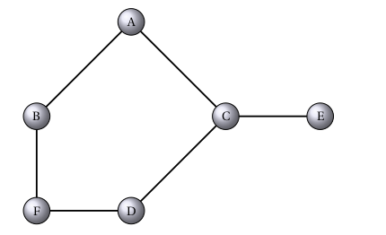

TP Graphe Exercices
| Thème : Structure de données |
|---|
| 24 | Les Graphes - Exercices et Implémentation |
|---|
Exercice 1⚓︎
Voici deux graphes que l'on appelera respectivement G1 et G2.

Graphe G1
Graphe G2Question
Lequel est non orienté ?
Question
Pour le graphe non orienté :
- Donner deux sommets adjacents et deux sommets non adjacents.
- Donner les voisins de A ?
- Quels sont les degrés des sommets B, C et E ?
- S'il y en a, donner un cycle de ce graphe.
- Donner toutes les chaînes entre les sommets A et D.
Question
Pour le graphe orienté :
- Donner les successeurs et les prédécesseurs des sommets A et C.
- S'il y en a, donner un chemin entre G et B. Et entre B et D ?
- S'il y en a, donner un circuit de ce graphe.
- Quel est le sommet dont le degré est le plus grand ?
Question
Donner la matrice d'adjacence de chacun de ces graphes (on prendra les indices des sommets dans l'ordre alphabétique).
Question
Donner la représentation de chacun de deux graphes sous la forme d'un dictionnaire de liste de successeurs.
Exercice 2 : Implémentation par matrice d'adjacence⚓︎
Cet exercice a pour objectif d'implémenter un graphe (non orienté puis orienté) par une matrice d'adjacence.
Graphe non orienté
Type abstrait GrapheNonOriente⚓︎
On peut doter le type abstrait des constructeurs suivants :
faire_graphe(sommets)pour construire un graphe (sans arêtes) à partir de la listesommetsde ses sommets.ajouter_arete(G, x, y)pour ajouter une arête entre les sommetsxetydu grapheG.
Pour pouvoir parcourir un graphe non orienté, on a besoin d'accéder à la liste des sommets et d'accéder aux sommets voisins d'un sommet donné.
sommets(G)pour accéder à la liste des sommets du grapheG.voisins(G, x)pour accéder à la liste des voisins du sommetxdu grapheG.
Représentation par matrice d'adjacence⚓︎
On choisit de créer une classe GrapheNoMa pour implémenter un graphe
non orienté par sa matrice d'adjacence à partir de la liste sommets de
ses sommets (au sens list de Python). En voici une implémentation
incomplète puisqu'il manque la méthode voisins(self, x).
class GrapheNoMa:
def __init__ (self, sommets):
self.som = sommets
self.dimension = len(sommets)
self.adjacence = [[0 for i in range(self.dimension)] for j in range(self.dimension)]
def ajouter_arete(self, x, y):
i = self.som.index(x)
j = self.som.index(y)
self.adjacence[i][j] = 1
self.adjacence[j][i] = 1
def sommets(self):
return self.som
def voisins(self, x):
pass
Question
Combien d'attributs possèdent les (objets) graphes de cette classe ? Quels sont leurs noms ?
Lors de la création d'un objet GrapheNonOriente de cette classe, que contient la matrice d'adjacence ? Est-ce normal ?
Question
Quelle instruction permet de créer un objet g1 de cette classe contenant les sommets "a", "b", "c", et "d" ?
Question
Quelles instructions permettent d'accéder aux attributs du graphe g1 ?
Question
Expliquer le rôle de chaque ligne de la méthode ajouter_arete en commentant directement le code. N'hésitez pas à consulter la documentation de Python sur les listes.
Question
Ecrivez les instructions pour ajouter les arêtes ("a","b"), ("a","c") et ("c","d"). Vous vérifiez ensuite que la matrice d'adjacence est cohérente.
Question
Ajoutez la méthode voisins à la classe pour qu'elle soit complète.
Question
Quelle instruction écrire pour afficher la liste des voisins du sommet "a" ? Et pour les autres sommets ?
Question
Implémenter le graphe G2
Graphe orienté⚓︎
Question
En vous inspirant de ce qui vient d'être fait, proposez un nouveau type abstrait GrapheOriente (vous donnerez les opérations de base) et son implémentation par une matrice d'adjacence sous forme d'une classe GrapheOMa.
Question
Écrivez ensuite les instructions permettant de construire le graphe orienté g1. Vérifiez que le contenu de la matrice d'adjacence est cohérent.
Exercice 3 : Implémentation par liste de successeurs⚓︎
Cet exercice a pour objectif d'implémenter les types abstraits GrapheNonOriente et GrapheOriente (définis dans l'exercice précédent) par un dictionnaire contenant les listes de voisins/successeurs de chaque sommet.
Graphe non orienté⚓︎
Type abstrait GrapheNonOriente⚓︎
On reprend le même type abstrait que celui de l'exercice précédent, il possède donc exactement la même interface que l'on rappelle ici.
faire_graphe(sommets)pour construire un graphe (sans arêtes) à partir de la listesommetsde ses sommets.ajouter_arete(G, x, y)pour ajouter une arête entre les sommetsxetydu grapheG.sommets(G)pour accéder à la liste des sommets du grapheG.voisins(G, x)pour accéder à la liste des voisins du sommetxdu grapheG.
Représentation par liste de successeurs⚓︎
On choisit de créer une classe GrapheNoLs pour implémenter un graphe
non orienté par liste de successeurs.
Remarque importante : pour que l'utilisateur qui utilise le type
GrapheNonOrientevia l'interface fournie ne constate aucune différence (entre les deux implémentations), l'initialisation d'un objet de la classeGrapheNoLsse fera également par la donnée de la liste de successeurs (au sens list de Python) : c'est-à-dire queg1 = GrapheNoLs(["a", "b", "c", "d"])crée un graphe dont les sommets sont"a","b","c","d".
Voici le début de l'implémentation avec uniquement la méthode spéciale
__init__.
# classe avec uniquement la méthode __init__
class GrapheNoLs:
def __init__ (self, sommets):
self.som = sommets
self.dic = {sommet: [] for sommet in self.som} # création par compréhension
Question
Combien d'attributs possèdent les (objets) graphes de cette classe ?
Quels sont leurs noms ? Lors de la création d'un objet GrapheNonOriente de cette classe, que contient le dictionnaire des successeurs ? Est-ce normal ?
Question
Quelle instruction permet de créer un objet g3 de cette classe contenant les sommets "a", "b", "c", et "d" ?
Question
Quelles instructions permettent d'accéder aux attributs du graphe g3 ?
Question
Complétez la classe GrapheNoLs avec les trois méthodes manquantes.
Attention : pour l'ajout d'une arête il faudra vérifier que ses sommets ne sont pas déjà dans la liste des successeurs/voisins correspondante, sous peine d'ajouter plusieurs fois le même successeur/voisin.
Question
Ecrivez les instructions pour ajouter les arêtes ("a","b"), ("a","c") et ("c","d") au graphe g3 défini plus haut. Vous vérifiez ensuite que le dictionnaire est cohérent et que si on ajoute une nouvelle fois une des arêtes existantes, les listes de successeurs ne contiennent pas plusieurs fois le même successeur.
Question
Quelle instruction écrire pour afficher la liste des voisins du sommet "a" ? Et pour les autres sommets ?
Graphe orienté⚓︎
Question
En vous inspirant de ce qui vient d'être fait, proposez une implémentation du type abstrait GrapheOriente (voir exercice précédent) par liste de successeurs sous forme d'une classe GrapheOLs.
Question
Ecrivez ensuite les instructions permettant de construire le graphe orienté G1. Vérifiez que le contenu de la matrice d'adjacence est cohérent.
Exercice 4 : Passer d'une représentation à l'autre⚓︎
Avec le type abstrait défini et les représentations symboliques choisies, passer d'une représentation à l'autre consiste simplement à énumérer les sommets et les voisins depuis une représentation tout en construisant l'autre représentation.
Question
Ecrivez une fonction ma_to_ls(gma) qui prend en argument un objet gma de la classe GrapheNoMa et qui renvoie un objet de la classe GrapheNoLs représentant le même graphe. Autrement dit une fonction qui permet de passer de la matrice d'adjacence à la liste de successeurs. Relisez bien le paragraphe précédent pour la méthode.
# à compléter
def ma_to_ls(gma):
#créer un graphe repr é sent é par liste de successeurs avec
#les memes sommets que gma parcourir tous les sommets x de gma
#et pour chaque sommet voisin de x , cr é er l ' arete correspondante
#dans le graphe repr é sent é par liste de successeurs
#renvoyer et le graphe ainsi crée
pass
Question
Vérifiez sur un exemple (ou plusieurs) que votre fonction fait bien le travail. Vous pourrez vérifier le contenu de la matrice et du dictionnaire de listes de successeurs.
Question
Ecrivez la fonction de traduction réciproque permettant de passer des listes de successeurs à une matrice d'adjacence.
Exercice 5 : Ajout de quelques méthodes⚓︎
On propose dans cet exercice d'ajouter quelques méthodes aux classes
GrapheNoMa et GrapheNoLs des deux exercices précédents.
Méthode spéciale __repr__⚓︎
Question
Compléter le code de la classe GrapheNoMa et ajoutez-y la méthode spéciale __repr__ pour afficher le graphe crée sous la forme suivante :
a -> b c
b -> a
c -> a d
d -> c
c'est-à-dire une ligne par sommet, avec pour chacun la liste de ses voisins.
Question
Compléter le code de la classe GrapheNoLs de l'exercice 4 et ajoutez-y la méthode spéciale __repr__ pour afficher le graphe crée sous la forme suivante :
a -> b c
b -> a
c -> a d
d -> c
c'est-à-dire une ligne par sommet, avec pour chacun la liste de ses voisins.
Méthode degre sommet⚓︎
Question
Ajoutez aux deux classes GrapheNoMa et GrapheNoLs une méthode degre_sommet qui permet de renvoyer le degré d'un sommet.